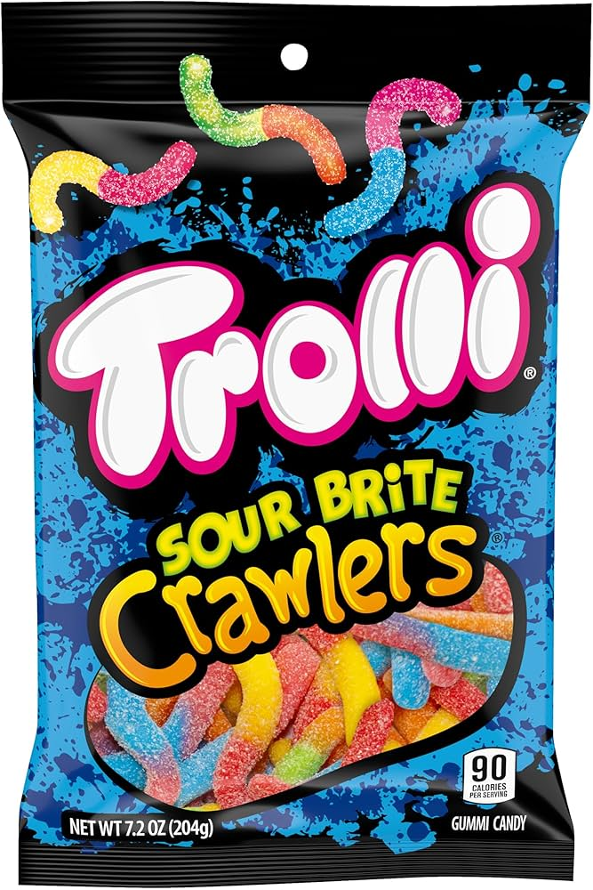
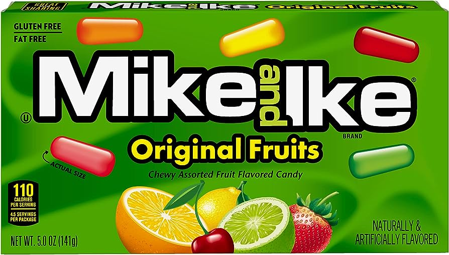
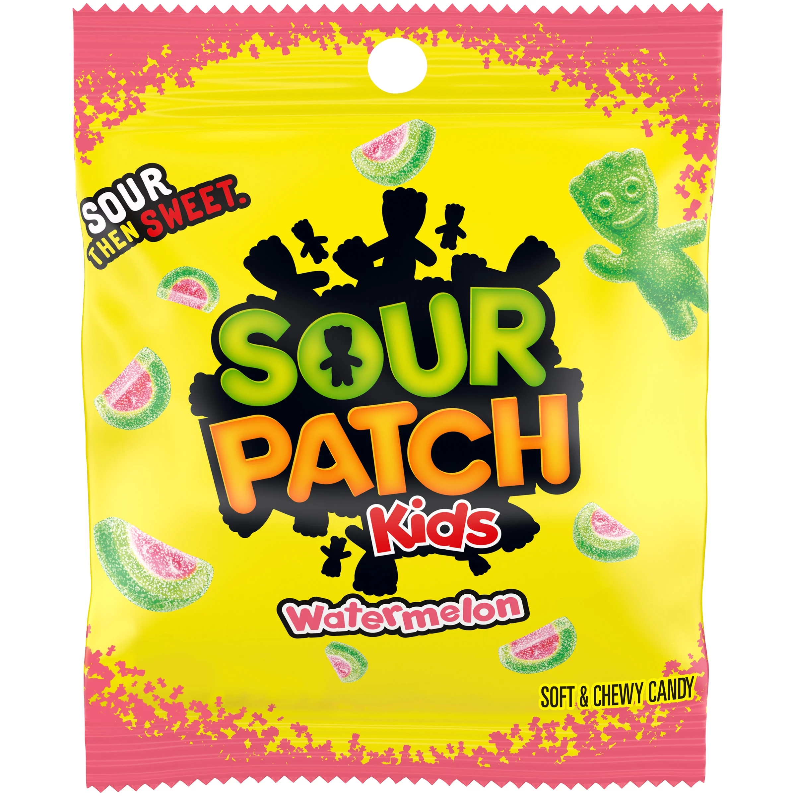
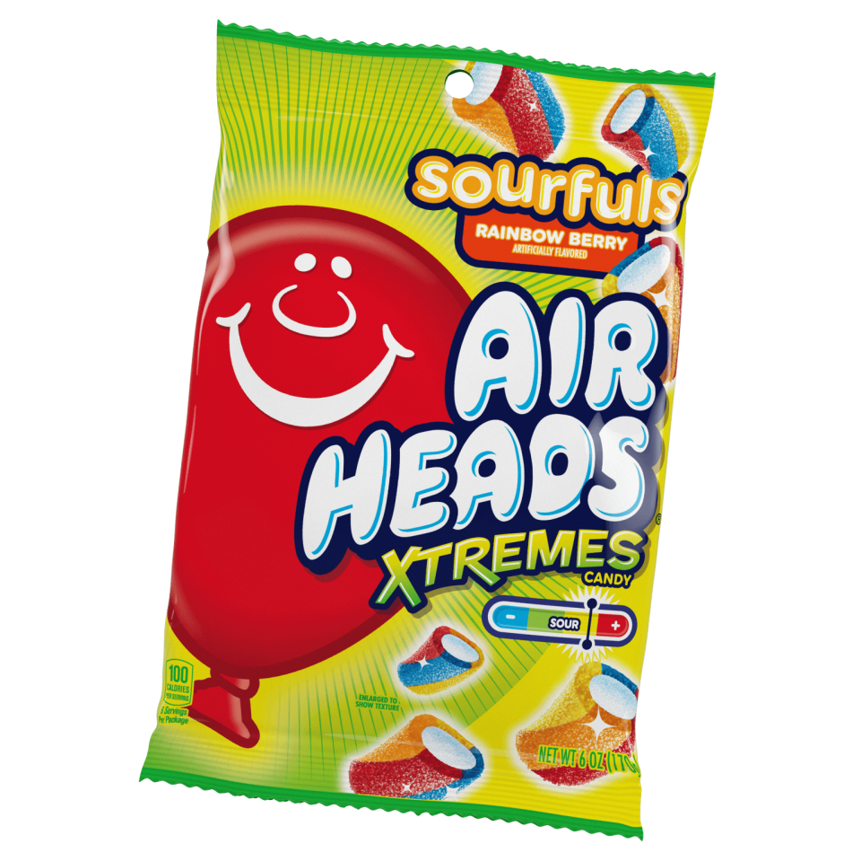

Trolis are very sour and delectable, though very unnatural
Mike and Ike candies are chewy, fruit-flavored treats with vibrant colors and a variety of flavors, perfect for snacking.
Sour Patch Kids Watermelon are tangy, chewy candies with a sweet watermelon flavor and sour sugar coating.
Airheads Sour Fruits are chewy, tangy candies bursting with fruity flavors and a sour sugar coating.